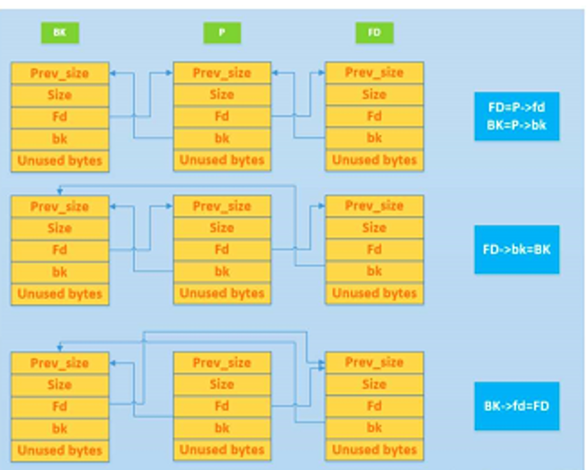
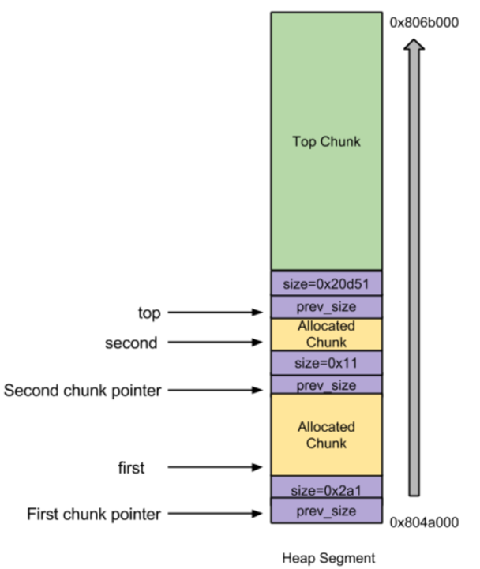

unlink攻击¶
unlink¶
Unlink 的定义与核心机制 unlink 用来将一个双向链表（只存储空闲的 chunk）中的一个元素取出来
-
功能：unlink 操作的本质是将一个指定的 Chunk 从其所在的双向链表（Bin）中移除（脱链）
-
数据结构前提：该操作仅适用于双向链表，即管理 Unsorted Bin、Small Bin、Large Bin 的结构。
-
当执行 unlink(P) 时，其核心逻辑为：
FD = P->fd; // 获取 P 的前向指针
BK = P->bk; // 获取 P 的后向指针
FD->bk = BK; // 将 FD 的后向指针指向 BK
BK->fd = FD; // 将 BK 的前向指针指向 FD

Unlink 的四种主要使用场景
- malloc（内存分配）
-
场景 A：从恰好大小合适的 Large Bin 中获取 Chunk。
当用户申请的内存大小与某个 Large Bin 中 Chunk 的大小完全一致时，malloc 会直接将该 Chunk 从链表中 unlink 下来，分配给用户。
-
场景 B：从比请求的 Chunk 所在的 Bin 大的 Bin 中取 Chunk。
当没有精确匹配的 Chunk 时，malloc 会去更大的 Bin 中寻找。找到后，会将该 Chunk unlink，分割出一部分给用户，剩余部分放回 Unsorted Bin。
-
free（内存释放） 一旦涉及到free内存（非mmaped的chunks的回收机制），那么就意味着有新的chunk由allocated状态变成了free状态，此时glibc malloc就需要进行合并操作——向前以及(或)向后合并
-
将previous free chunk合并到当前free chunk，叫做向后合并；将后面的free chunk合并到当前free chunk，叫做向前合并
-
后向合并（Backward Consolidation）：合并物理相邻的低地址空闲 Chunk。此时，需要将低地址的空闲 Chunk 从它所在的 Bin 中 unlink 出来，然后与当前 Chunk 合并。
-
前向合并（Forward Consolidation）：合并物理相邻的高地址空闲 Chunk（除了 Top Chunk）。同样，需要将高地址的空闲 Chunk unlink 出来进行合并。
-
-
malloc_consolidate（Fast Bin 合并）
-
当触发 Fast Bin 的清理机制时，ptmalloc 会遍历 Fast Bin，将其中所有 Chunk 取出。
-
在这个过程中，如果发现 Fast Bin 中的 Chunk 与相邻的空闲 Chunk 物理相邻，就会执行 unlink 操作，将相邻的空闲 Chunk 从它所在的 Bin（如 Unsorted Bin）中摘除，然后进行合并。
-
realloc（内存重分配）
- 前向扩展：当使用 realloc 扩大内存时，如果当前 Chunk 后面的物理相邻 Chunk 是空闲的（且不是 Top Chunk），ptmalloc 会将该空闲 Chunk unlink 出来，合并到当前 Chunk 中，以满足扩展需求。
Fast Bin 不使用 unlink。这是因为 Fast Bin 采用单向链表，且不进行合并操作。正因为缺少 unlink 的完整性校验，Fast Bin 成为了堆漏洞（如 Fastbin Attack）的高发区。
攻击unlink¶
核心就是理解与利用glibc malloc的free机制
Unlink Attack 的原理（针对旧版 libc）
-
攻击者通过堆溢出，覆盖一个空闲 Chunk 的 fd 和 bk 指针（例如，将 fd 设为 free 函数的 GOT 表地址 - 12，将 bk 设为 Shellcode 的地址）。
-
当触发 unlink 时，宏执行 FD->bk = BK，实际上就是将 Shellcode 的地址写入了 GOT 表。
-
下次程序调用 free 时，就会跳去执行 Shellcode。
示例
/*
Heap overflow vulnerable program.
*/
#include<stdlib.h>
#include<string.h>
int main( intargc, char * argv[] )
{
char * first, * second;
first= malloc( 666 );
second= malloc( 12 );
if(argc!=1)
strcpy( first, argv[1] );
free(first );
free(second );
return( 0 );
}
代码逻辑
-
first = malloc(666);：申请一块内存，返回指针 first。
-
second = malloc(12);：申请第二块内存，返回指针 second。
-
strcpy(first, argv[1]);：漏洞点。使用 strcpy 将命令行参数复制到 first 指向的内存中。strcpy 不检查长度，若输入超长，会溢出覆盖到物理相邻的 second Chunk。
-
free(first);：释放 first。
-
free(second);：释放 second。
初始状态内存布局

first Chunk在低地址，second Chunk在高地址，紧邻 Top Chunk。
此时，first 和 second 都处于已分配（Allocated）状态，它们的 size 字段低位的 PREV_INUSE 标志位为 1。
攻击者精心构造的溢出数据
攻击者在执行 strcpy 时，输入了精心构造的恶意数据。这些数据不仅填满了 first Chunk 的数据区，还溢出了 first 的边界，覆盖了物理相邻的下一个 Chunk（即 second Chunk）的头部结构。
被篡改的 second Chunk 头部字段如下：
-
prev_size = 一个偶数：
-
prev_size 字段用于记录前一个 Chunk（即 first）的大小。
-
设置为偶数，是为了保证其二进制最低位为 0。
-
size = -4：
-
这是关键操作，size 字段存储了当前 Chunk 的大小以及标志位。
-
在 32 位系统中，size 的低 3 位是标志位，其中最低位（第 0 位）是 PREV_INUSE（P位）。
-
-4 的十六进制补码是 0xFFFFFFFC。它的最低位是 0。
-
这导致 second Chunk 的 size 字段的 PREV_INUSE 位被强制置为 0。
-
效果：欺骗 glibc malloc，让它误以为 second Chunk 的前一个 Chunk（即 first）是空闲的。
-
fd = free函数的got表地址 - 12：
-
攻击者将 second Chunk 的 fd（前向指针）指向了目标地址。
-
减去 12 是为了补偿 unlink 宏中 FD->bk = BK 操作时的偏移量（因为 bk 在 Chunk 结构中的偏移量是 12 字节）。
-
bk = shellcode的地址：
-
攻击者将 second Chunk 的 bk（后向指针）指向了存放在内存某处的 Shellcode（恶意代码）的起始地址。
触发 Unlink 操作
- 程序执行到free(first);
free() 函数在释放 first 时，会进行合并操作。它的检查逻辑如下：
-
向后合并（合并低地址 Chunk）：检查 first 前一个 Chunk 是否空闲。由于 first 是堆中第一个分配的 Chunk，其前一个 Chunk 不是空闲的，因此不发生向后合并。
-
向前合并（合并高地址 Chunk）：检查 first 的下一个 Chunk（即 second）是否空闲。
-
free() 会读取 second Chunk 的 size 字段。
- 因为攻击者将 size 设置为 -4，其 PREV_INUSE 位为 0，free() 误认为 second 是空闲的。
-
于是，free() 决定将 second 合并到 first 中。合并的前提是先将 second 从它所处的空闲链表（Bin）中“摘除”。
-
这会调用 unlink(second)
-
关键结果
- FD->bk = BK 这一行代码执行后，实际上是将 BK 的值（Shellcode 地址）写入了 FD->bk 指向的地址。由于 FD 被设置为 free_addr - 12，计算后的目标地址正是 free 函数在 GOT 表中的地址。
- 因此，free 函数的 GOT 表项被成功篡改为 Shellcode 的地址。
地址篡改原理详解
Chunk 的头部结构
Chunk P 的地址布局：
[ P + 0 ] -> prev_size (4字节)
[ P + 4 ] -> size (4字节)
[ P + 8 ] -> fd (4字节) <-- 注意：fd 在 P+8 的位置
[ P + 12 ] -> bk (4字节) <-- 注意：bk 在 P+12 的位置
[ P + 16 ] -> 用户数据区 (Payload)
攻击者在溢出数据中，把 P 这个 Chunk 的 fd 和 bk 字段篡改成了特定的值
-
FD = P->fd：读取 P 的 fd 字段的值。攻击者把它设为 free_addr - 12。
-
所以，FD 的值 = free_addr - 12。
-
BK = P->bk：读取 P 的 bk 字段的值。攻击者把它设为 shellcode_addr。
-
所以，BK 的值 = shellcode_addr。
此时，这两个只是变量（指针），它们指向了攻击者指定的地址。
理解 FD->bk = BK
向 FD 这个指针指向的结构体的 bk 字段，写入 BK 的值。
但C 语言编译器是通过 FD 的地址 + bk 字段的偏移量 来计算的
-
FD 的地址 = free_addr - 12
-
bk 字段的偏移量 = 12
-
所以，FD->bk 这个内存地址实际上是(free_addr - 12) + 12 = free_addr
最终把 BK 的值（shellcode_addr）写入到 free_addr 这个内存地址里
free_addr 是 free 函数在 GOT 表中的地址。这行代码成功地将 free 函数的 GOT 表项篡改成了 shellcode_addr。下次程序调用 free 时，就会跳去执行 Shellcode。
BK->fd = FD 的意思是：向 BK 这个指针指向的结构体的 fd 字段，写入 FD 的值。
同样，编译器通过 BK 的地址 + fd 字段的偏移量 来计算：
-
BK 的地址 = shellcode_addr
-
fd 字段的偏移量 = 8
-
所以，BK->fd 这个内存地址实际上是：shellcode_addr + 8
这行代码执行的操作是：把 FD 的值（free_addr - 12）写入到 shellcode_addr + 8 这个内存地址里。
攻击效果 这行代码的作用是为了维持链表的完整性，防止程序在后续操作中因为链表断裂而崩溃。它把 shellcode_addr + 8 这个位置的内容改写成了 free_addr - 12，使得链表看起来仍然是合法的。
劫持程序执行流
程序执行到free(second);。
-
程序再次调用 free 函数。
-
由于free 函数的 GOT 表项已经被改写为 Shellcode 的地址。
-
CPU 不会去执行原本的 free 函数代码，而是直接跳转到 Shellcode 的地址 开始执行。
最终效果 攻击者成功通过堆溢出漏洞，实现了任意代码执行（执行了 Shellcode）
现代防护（libc 2.23 之后）
-
在执行 unlink 前，会检查 P->fd->bk == P 且 P->bk->fd == P。
-
这意味着，如果攻击者伪造了 fd 和 bk，它们必须指向一个合法的、互相指向的结构。简单的伪造（如上述的 GOT 表攻击）会导致检查失败，程序报错（corrupted double-linked list）。
-
因此，简单的 Unlink 攻击在现代系统上已经失效，仅存在于低版本（如 libc-2.23）的环境中。